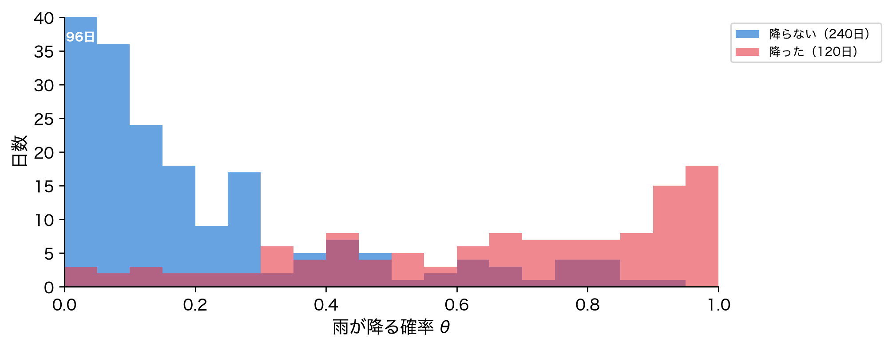
第7回 分類モデル
確率を出力してカテゴリを判断する——ロジスティック回帰・LDA・AUC
場面：「悪性ですか、良性ですか」
検査値から腫瘍が悪性か良性かを判定します。回帰のように数値を返せばよいでしょうか。
灰色の直線は確率の外へ出ていきます。 0〜1に収まる仕組みが要ります。
今回の問い
乳がん検診の画像特徴量（30変数）から良性か悪性かを判断したい。
- これは「数値の予測」ではなく「カテゴリの分類」
- 第6回までの回帰は連続値を当てる問題だった——目的変数の性質が違う
- そして精度（Accuracy）だけで評価して、本当によいのか？
今回は確率を出力する分類モデルと、その正しい評価方法を学ぶ。
具体化①：分類はどこにでもある
「YesかNoか」を当てる問題は身の回りに溢れている。
いずれも目的変数が離散ラベル。回帰の道具はそのままでは使えません。
具体化②：データを見る
sklearn 同梱の乳がんデータ。30変数・569件、良性357・悪性212。
標本数=569, 変数数=30
良性(1)=357件, 悪性(0)=212件目的変数 y は 0 か 1 の二値。「この値をどう予測するか」が今回の主題。
データの四角形：y が 0/1 になった
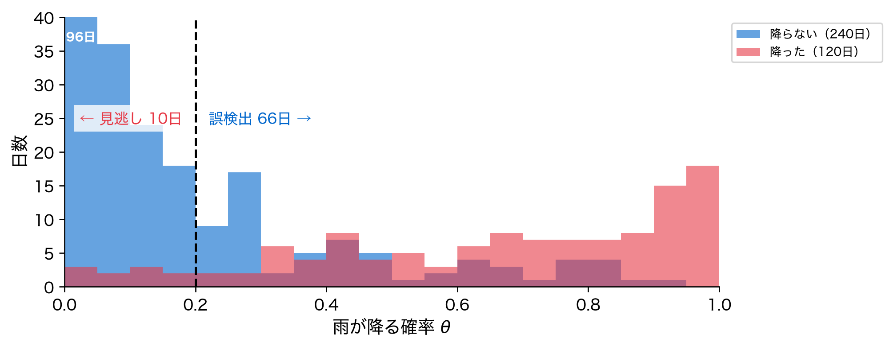
回帰との違いは y 列の中身だけ（数値 → 0/1）。\mathbf{X} 側は同じ四角形で、行がクラスごとのかたまりに分かれる。
具体化③：2次元で分布を見る
30次元は描けないので、PCAで2次元に圧縮してクラスの広がりを見る。
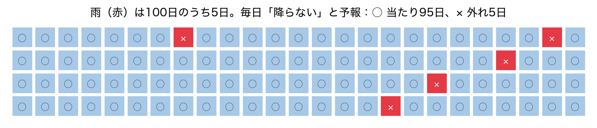
完全には分かれないが、悪性は左、良性は右に偏る——境界を引けそう。
素朴な方法①：回帰で0/1を予測する
0/1 の目的変数に線形回帰を当てると、予測値が0〜1に収まらない。

赤い直線は 0 を下回り 1 を超える——確率として解釈できない。
素朴な限界②：回帰では確率にならない
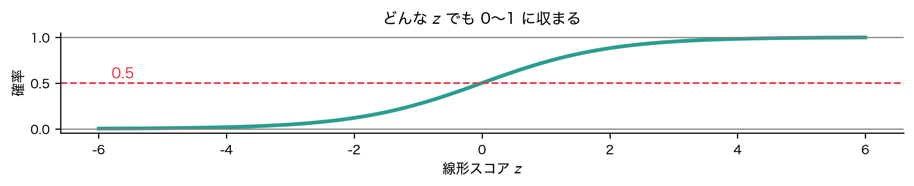
どんな入力でも0〜1に収まる仕組みが要ります。これがシグモイド関数です。
位置づけ：第6回からの流れ
- 第6回まで：目的変数は連続値——回帰でその値を当てた
- 第7回（今回）：目的変数はカテゴリ——確率を出して分類する
- 第8回（次回）：決定理論——誤りのコストから最適なしきい値を決める
回帰で培った「線形スコア \beta_0 + \mathbf{x}^\top\boldsymbol{\beta}」は今回も土台。 それを確率に変換する一工夫を加えるのが、分類への第一歩。
行列で見る：スコアは同じ掛け算
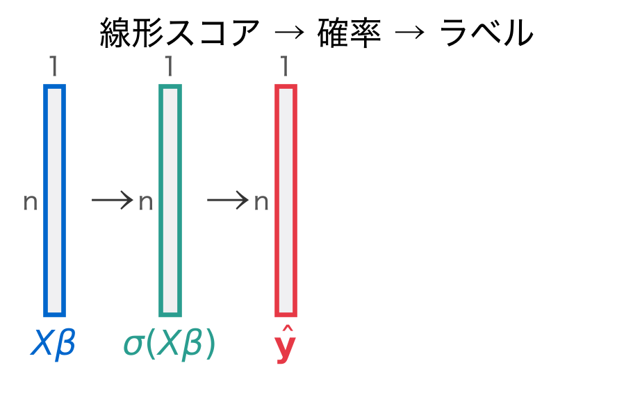
- クラス別の行から作る量：平均 \boldsymbol{\mu}_k、共分散 \boldsymbol{\Sigma}、散布 \mathbf{S}_W・\mathbf{S}_B（LDA で使う）
定義①：ロジスティック回帰
P(y=1 \mid \mathbf{x}) = \sigma(z) = \frac{1}{1+e^{-z}}, \quad z = \beta_0 + \mathbf{x}^\top\boldsymbol{\beta}
読み方：線形スコア z をシグモイドに通すと、必ず0から1のあいだに収まる。
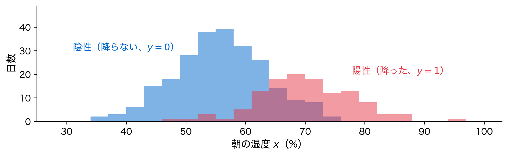
定義②：対数オッズという見方
\log\frac{P(y=1)}{P(y=0)} = \log\frac{p}{1-p} = \beta_0 + \mathbf{x}^\top\boldsymbol{\beta}
読み方：オッズ（陽性の確率を陰性の確率で割ったもの）の対数が、線形スコアそのもの。
- オッズ：起こる確率と起こらない確率の比
- その対数（ロジット）が特徴量の線形和
\beta_j は「x_j が1増えたときの対数オッズの増分」。
定義③：LDA（線形判別分析）
- 各クラスが正規分布に従い、共分散行列は両クラス共通と仮定
- 各クラスの平均・共分散を推定し、ベイズの定理（定義⑤）で事後確率に変換
フィッシャーの判別基準
J(w) = \frac{w^\top S_B\, w}{w^\top S_W\, w}
定義④：尤度と最尤推定
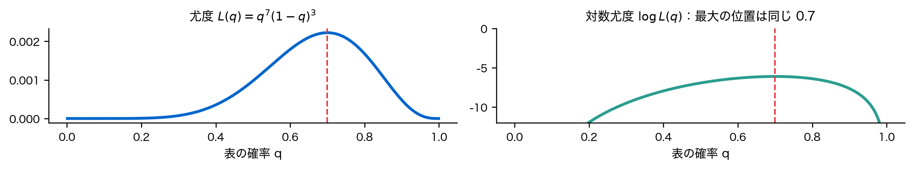
\begin{aligned} L(\theta)&=\textstyle\prod_{i} P(\text{観測}_i \mid \theta)\\ \hat{\theta}&=\arg\max L(\theta)=\arg\max\,\log L(\theta) \end{aligned}
観測をいちばんよく再現するパラメータを選ぶ
定義⑤：ベイズの定理と正規分布
P(y=k\mid\mathbf{x})=\frac{\pi_k\, f_k(\mathbf{x})}{\sum_j \pi_j\, f_j(\mathbf{x})}
f_k(\mathbf{x})\;\propto\;\exp\Bigl(-\tfrac12(\mathbf{x}-\boldsymbol{\mu}_k)^\top\Sigma^{-1}(\mathbf{x}-\boldsymbol{\mu}_k)\Bigr)
- \pi_k：事前確率（そのクラスがもともと多いか）
- f_k：クラス k の分布（中心 \boldsymbol{\mu}_k・共分散 \Sigma）
導出①：最尤推定で係数を決める
各標本の確率を p_i = \sigma(z_i) とすると、全体の尤度（定義④）は
L(\boldsymbol{\beta}) = \prod_{i=1}^n p_i^{\,y_i}(1-p_i)^{1-y_i}
- y_i=1 なら p_i、y_i=0 なら 1-p_i を掛ける——観測を再現する確率
- 積は扱いにくいので、対数を取って対数尤度にする（次スライド）
導出②：対数尤度と交差エントロピー
\ell(\boldsymbol{\beta}) = \sum_{i=1}^n \Big[\,y_i \log p_i + (1-y_i)\log(1-p_i)\,\Big]
読み方：対数を取ると積が和になる。これを最大にする係数を探す。
符号を反転したものが交差エントロピー損失。回帰と違うのは損失だけ。
導出③：決定境界が線形になる理由
「良性と悪性が五分五分」の点をつなぐと、それが決定境界。

P(y=1)=0.5 は z=0、すなわち直線の式。だから境界は必ず線形になります。
導出④：LDAの判別関数
ベイズの定理と正規分布（定義⑤）から各クラスの判別スコアを作る。
\delta_k(\mathbf{x}) = \mathbf{x}^\top \Sigma^{-1}\boldsymbol{\mu}_k - \tfrac{1}{2}\boldsymbol{\mu}_k^\top \Sigma^{-1}\boldsymbol{\mu}_k + \log \pi_k
読み方：クラスの中心への近さから、中心自身の大きさを引き、事前確率の対数を足す。
共通共分散の仮定で二次項が相殺され、\mathbf{x} の1次式になる。 スコア差が境界。やはり線形式である。
アルゴリズム：分類の手順
sklearn ではどちらも fit → predict_proba → predict の流儀です。
Pythonデモ①：2モデルを当てはめる
LDA: AUC=0.9924, 精度=0.9561
ロジスティック回帰: AUC=0.9954, 精度=0.9825ロジスティック回帰がAUC 0.995・精度0.982でわずかに上回った。
Pythonデモ②：決定境界を描く
2次元（PCA）に絞ってロジスティック回帰の決定境界を可視化する。
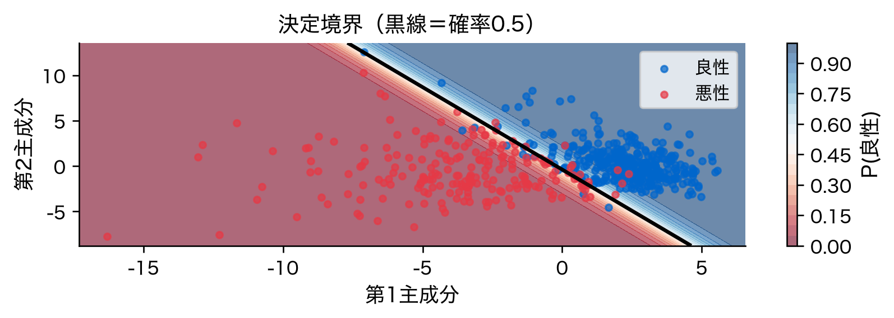
黒い線が確率0.5の境界。色のグラデーションが確率の連続的な変化。
Pythonデモ③：係数とオッズ比
標準化済み係数を \exp するとオッズ比。寄与の大きい変数を見る。
sc = StandardScaler().fit(X_train)
lr_full = LogisticRegression(max_iter=1000).fit(sc.transform(X_train), y_train)
coef = pd.Series(lr_full.coef_[0], index=X.columns)
top = coef.abs().sort_values(ascending=False).head(5).index
for name in top:
print(f"{name}: 係数={coef[name]:+.3f}, オッズ比={np.exp(coef[name]):.3f}")worst texture: 係数=-1.255, オッズ比=0.285
radius error: 係数=-1.083, オッズ比=0.339
worst concave points: 係数=-0.954, オッズ比=0.385
worst area: 係数=-0.948, オッズ比=0.388
worst radius: 係数=-0.948, オッズ比=0.388worst texture の係数が最も大きく負（オッズ比0.285）——値が高いほど悪性側へ。
Pythonデモ④：ROC曲線とAUC
閾値を動かしたときの真陽性率・偽陽性率の軌跡がROC曲線。
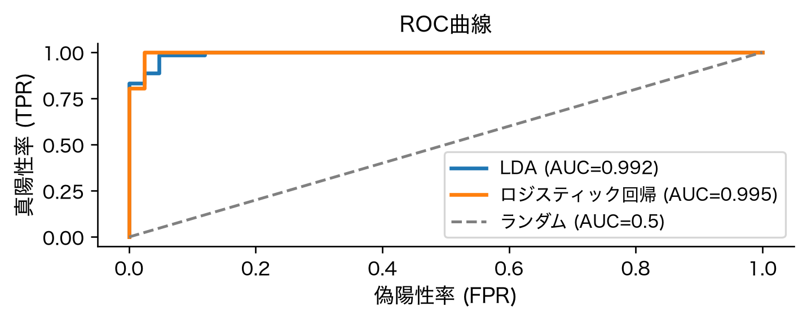
左上に張りつくほど良い分類器。AUCはその下の面積——両モデルとも0.99超。
解釈①：混同行列を読む
予測と正解のクロス表。誤りの内訳が一目で分かる。
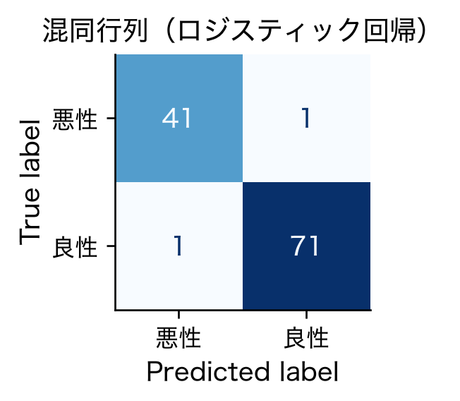
テスト114件中、悪性41/良性71を正解。誤りは各クラス1件ずつだけ。
解釈②：適合率と再現率
混同行列から目的に応じた指標を計算する。
再現率=0.976 適合率=0.976 精度=0.982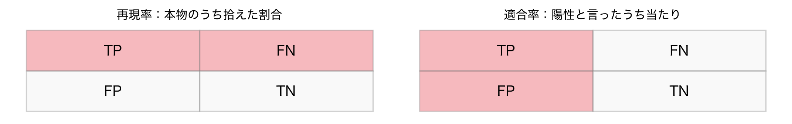
医療では見逃し（再現率）を重視します。取りこぼしが致命的だからです。
解釈③：閾値はトレードオフのつまみ
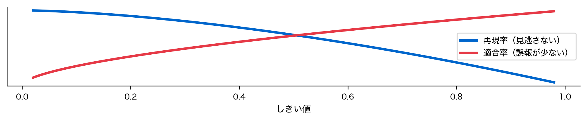
片方を上げれば片方が下がります。 正解は誤りのコストで決まります（第8回）。
AUC 0.99超・見逃し1件の分類器が得られた——ただ、これらの解釈には落とし穴があるかもしれない。
落とし穴①：クラス不均衡と精度の罠
全部「陰性」と答えるだけ: 精度=0.915
ロジスティック回帰 : 精度=0.942
何も学習していないほうも0.9を超えます。
落とし穴②：しきい値0.5固定の罠
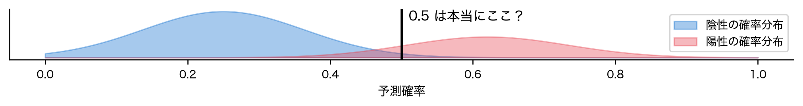
閾値0.5: 精度=0.942 再現率=0.569 適合率=0.690
閾値0.3: 精度=0.937 再現率=0.745 適合率=0.603
閾値0.2: 精度=0.918 再現率=0.804 適合率=0.5120.3に下げると0.745へ改善——0.5は絶対ではない。
落とし穴③：AUCだけを見る危うさ
- AUC=0.932 と高いのに、閾値0.5の再現率は0.569しかない
- AUCは「順位づけの良さ」を測るが、運用の閾値での性能は別
「AUCが高い＝そのまま使える」ではない——指標の意味を取り違えない。
落とし穴④：係数の順位＝重要度ではない
- デモ③の係数は「この30変数を全部入れたときの取り分」
- 相関の強い変数どうしは係数を分け合う（
worst textureとmean textureの相関0.912） - 値の大きさは既定の L_2 罰則で縮められたあとのもの
係数の順位は、そのまま重要度の順位とは読めない（第5回の多重共線性）。
落とし穴まとめ：評価指標の早見表
| 指標 | 意味 | 注意 |
|---|---|---|
| 精度 | 全体の正解率 | 不均衡データで誤解を招く |
| AUC | 閾値非依存の順位性能 | 運用閾値での性能は別物 |
| 適合率/再現率 | 誤りの種類を区別 | 目的に合う閾値選択が必要 |
「精度が高い」だけで安心しない——どの誤りを許容するかが本質。
発展①：多クラス分類への拡張
2クラスの枠組みは、3クラス以上にも自然に広がる。
- One-vs-Rest：「クラスkか否か」の二値分類をK個作る
- 多項ロジスティック回帰（ソフトマックス）：確率を一度にK個出力
- LDAも複数クラスへそのまま拡張できる（判別関数をK個比較）
sklearn の LogisticRegression は多クラスを自動で扱える。
発展②：非線形分類への布石
決定境界が直線では足りない場面もある。
- ロジスティック回帰・LDAの境界は直線（超平面）に限られる
- 入り組んだ境界には、特徴量の多項式展開やカーネル法
- 決定木・ランダムフォレスト・ニューラルネットは非線形境界を学べる
まず線形モデルで基準を作り、足りなければ非線形へ——が定石。
まとめ（3点）
- 分類は確率を出して決定境界を引く——ロジスティック回帰はシグモイド、LDAは生成モデル、境界はどちらも線形
- AUCは閾値に依存しない順位性能——0.5でランダム、1.0で完璧
- 不均衡では精度に騙されず、再現率・適合率と閾値を目的で選ぶ
「確率・決定境界・AUC・混同行列」——この4語を持ち帰る。
次回：決定理論——誤りのコストから最適なしきい値を決める
0.5 という既定値はどこから来たのか。誤りに値段をつければ、最適なしきい値は分数ひとつで決まる。 今回「トレードオフのつまみ」と呼んだものに、目盛りを付ける。